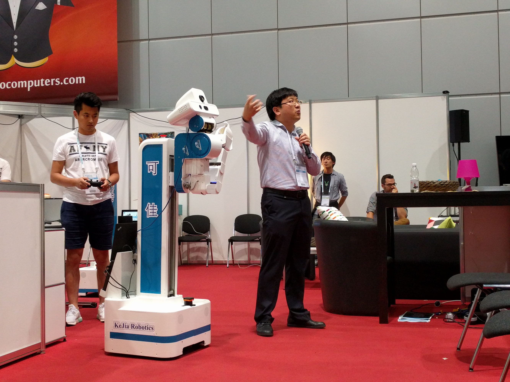

RoboCup@Home League
Our research team has been participating in the famous RoboCup competitions as the team of WrightEagle since 2005. My first attendance of RoboCup competition was the RoboCup2015 held during July 19th to July 23th in Hefei, China. I worked with my colleagues to develop a system that could measure the accuracy of the movement of robots. With this system, we are able to evaluate the precision of robots' hardwares by measuring the deviation of some simple actions (for example, moving 1.5m forward or turning 90°). The robots' abilities of accomplishing more complicated tasks, including navigation and motion planning, could also be assessed by this system, and improvements of both hardware and software could be made according to the results.
The measuring system is based on a commercial Motion Capture System (MCS) manufactured by OptiTrack. The system is composed with 12 infrared cameras, each of them has some attached LEDs that emit infrared light. Some small balls covered by retroreflective material, so called markers, are used as anchor points. After calibration, the system is able to measure the position in a pre-defined 3D coordinate system of a given marker from the 2D frames captured by all the cameras. And the position and orientation of a rigid body, such as moving base of a robot, could be calculated from the positions of at least 3 markers attached at its known sites. The system typically runs at 120 frames per second with measurement error less than 1mm.
The system enables us to calibrate robot hardware at an unprecedented accuracy. For example, inequality of the diameters of the two wheels could be easily spotted by tracking the diverging path of the robot that is intended to move in straight line. It was used as the judging system in the Benchmarking Service Robots competition in RoboCup2015 and the RoboCup China Open competition held in Guiyang, China in October 2015.
I took more work associated with competition in RoboCup2016 held in Leipzig, Germany, during June 30th to July 4th 2016. I maintained the robot vision module of our KeJia Robot with my colleagues, and applied it in standard tests of RoboCuo@Home League competitions. In the Object Manipulation test, the robot would utilize both of its high-resolution 2D camera and 3D kinect sensor to recognize presenting objects, and obtain their exact positions. Multiple features, including color histogram, LINEMOD, and SURF, are used simultaneously. Then the robot is able to plan its motion according to the positions, reach the desired object by its arm, and grasp it by its hand.

My team demonstrating in the final challenge of RoboCup@Home 2016 competition (photo taken by me)